本文首发于作者周浩同学的个人博客，本站获授权转载。
企业级PaaS解决方案
IaaS PaaS SaaS
一张图解释：
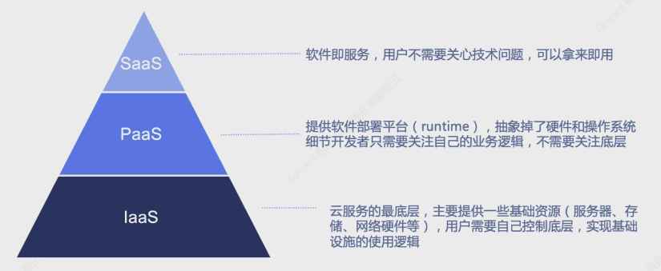
开始前的建议
Python的建议
我们建议你阅读Python的编码规范：https://www.python.org/dev/peps/pep-0008/
同时对于无编程基础的同学，可以去看看《简明Python教程》。
对于有编程基础的同学，可以去看看《Python核心编程 第二版》，熟悉1-8章，了解10-13章
Django的建议
你也还需要阅读Django的文档：https://docs.djangoproject.com/en/2.2/
同属熟悉框架：Tutorial (Part 1 | Part 2 | Part 3 | Part 4)
了解Models、querysets、views、template基本使用
框架目录介绍
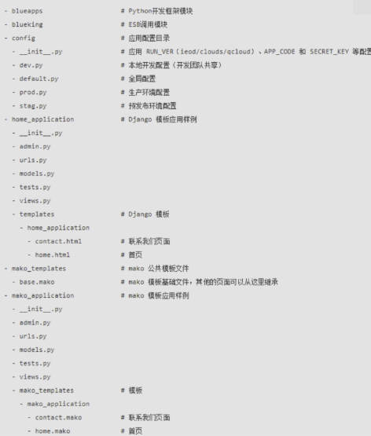
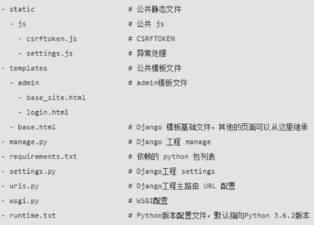
其中，我们研发重点关注的目录为：
- config - 项目配置文件
- static - 静态文件(图片、css、js)
- templates\make_templates - HTML模板基础文件
- home_application - 默认创建的应用目录(Django模板)
我们仔细看一下：
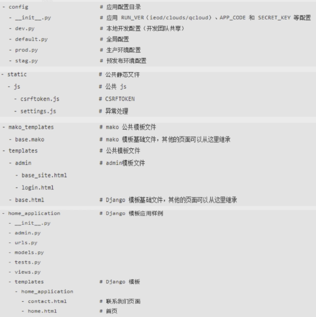
本地搭建蓝鲸
下载蓝鲸框架到本地
前往地址：https://bk.tencent.com/docs/document/5.1/2/20
下载该框架：
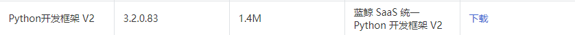
然后解压至一个你选中的目录。
它的目录结构应该是这样的：
1 | ├─blueapps |
创建虚拟环境并安装依赖
使用Pycharm打开该项目，并在内置终端中配置git，首次推送到远程仓库。
此处推荐使用码云题高效率。
然后我们创建虚拟环境，在Settings-Project:{Your Project Name}-Project Interpreter中点击齿轮-Add创建一个新的venv，如图：
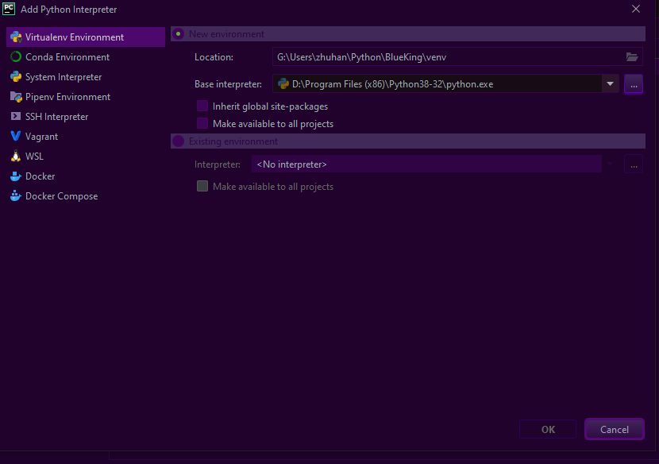
创建完虚拟环境后，建议添加gitignore文件移除对venv文件夹的控制。
然后安装依赖，使用虚拟环境终端:
1 | pip3 install -r requirement.txt -i https://pypi.tuna.tsinghua.edu.cn/simple |
但是在安装MysqlClient的时候遇到了问题：
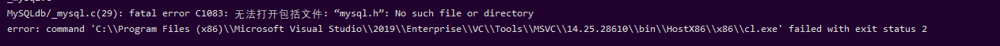
对于这种情况，MysqlClient的文档中解释，在Windows下构建MysqlClient是十分困难的，但是我们可以使用二进制包进行安装。
于是，我们首先检查自己的pip可以安装哪些平台的包。
进入python交互环境，依次输入：
1 | import pip._internal |
我的python版本是3.8，得到了以下结果：
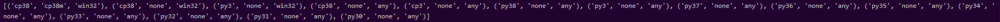
于是我们去下载它的二进制包。
地址：https://www.lfd.uci.edu/~gohlke/pythonlibs/#mysqlclient
你应该看到这样的界面：
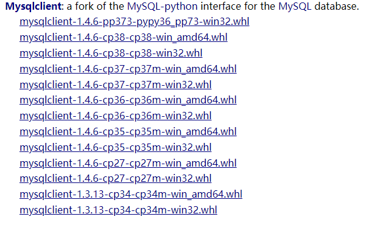
注意看，py36即为python3.6版本，cp36即为CPython3.6版本。具体差异请百度。
此处由于我们找不到可以完美适配我们的python版本的二进制包，于是我下载了，cp38-cp38的包，即:
mysqlclient‑1.4.6‑cp38‑cp38‑win32.whl
下载完成后将其拷贝入你的项目根目录。
然后修改其名称：
mysqlclient-1.4.6-cp38-cp38-win32.whl ===> mysqlclient-1.4.6-cp38-cp38m-win32.whl
这样使得可以让pip检测平台时不会弹no supported提示。
然后执行:
1 | pip3 install mysqlclient-1.4.6-cp38-cp38m-win32.whl |
安装成功：
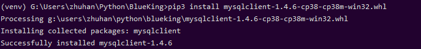
然后我们打开requirement.txt文件，在里面将mysqlclient==1.4.4该为你二进制包安装的版本。
然后我们再重新执行：
1 | pip3 install -r requirement.txt -i https://pypi.tuna.tsinghua.edu.cn/simple |
安装所有依赖。
在PaaS平台创建应用并填入对应信息
前往PaaS平台，在开发者中心中，进入应用中心，创建一个应用：
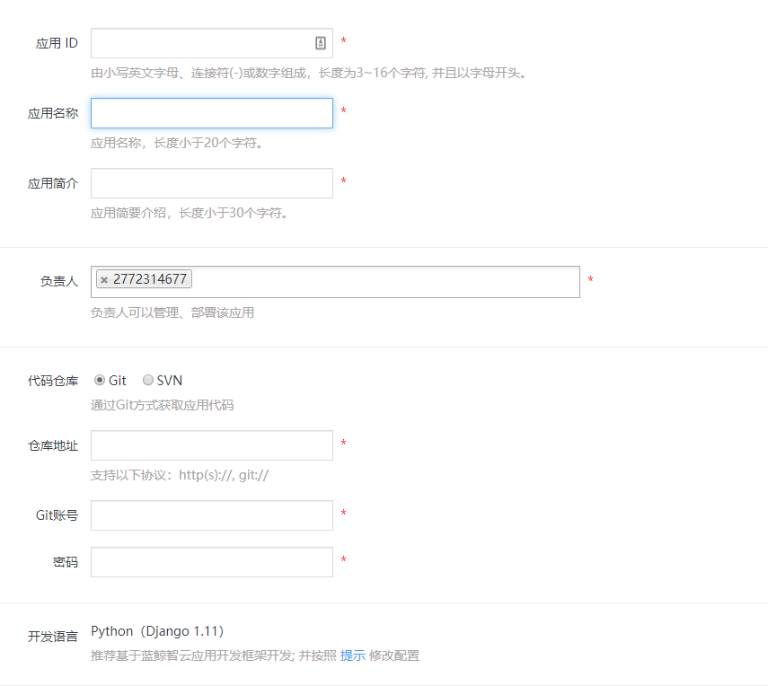
填好信息后提交，得到以下信息：
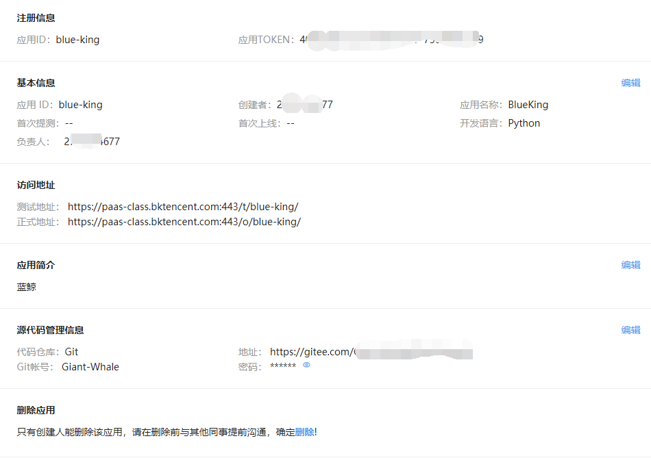
在config/init.py文件下填入以下信息：
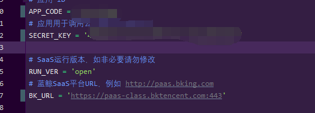
其中APP_CODE就是应用ID，SECRET_KEY就是TOKEN，SaaS地址如果是使用公共环境可以参考我的。
然后在本地数据库MySQL中创建一个对应自己应用ID的数据库，执行以下SQL语句(将{APP_CODE}替换为你的应用ID)：
1 | CREATE DATABASE `{APP_CODE}` default charset utf8 COLLATE utf8_general_ci; |
在config/dev.py中设置你的本地数据库密码。
然后我们执行：
1 | python manage.py migrate |
如果报错——“Did you install mysqlclient?”，请执行：
1 | pip3 uninstall mysqlclient |
而后按照安装二进制包的顺序重新安装一次mysqlclient。
但是我们还是报错，提示为：
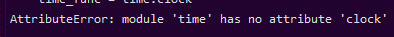
我们打开mako/compat.py，即为venv/Lib/mako/compat.py。
修改clock为perf_counter()，如图：
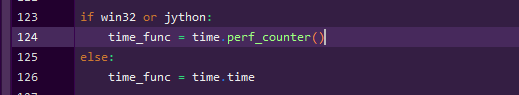
然后重新migrate，此次应该成功。
本地域名映射
打开hosts文件，加入一个域名映射：
1 | 127.0.0.1 appdev.{PAAS_URL} |
将其中的{PASS_URL}替换为你的PaaS平台地址。
例如：127.0.0.1 appdev.paas-class.bktencent.com
然后执行命令：
1 | python manage.py runserver appdev.paas-class.bktencent.com:8000 |
然后访问：https://appdev.paas-class.bktencent.com
看到如图即为配置成功：
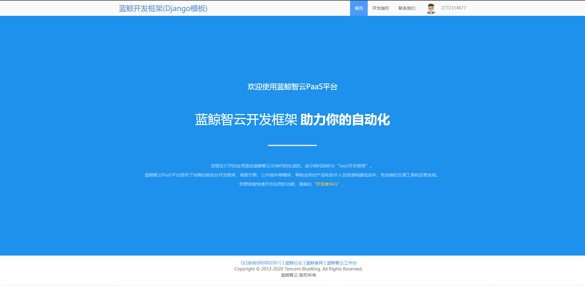
远程部署蓝鲸
在工作台中打开自助创建数据库，按步填写信息，获得远程蓝鲸数据库账户、密码、地址等信息。
然后填入config/stag.py和prod.py中。
如图：
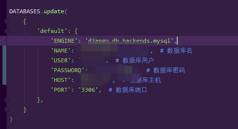
接下来推送至远程代码仓库。
然后进入部署界面
在发布部署中一键部署。
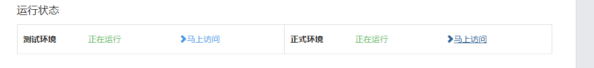
一键化部署成功。
写第一个HelloWorld应用部署至远程蓝鲸
在home_application的template/home_application下添加helloworld.html文件，内容为：
1 | <!DOCTYPE html> |
编辑home_application/urls.py，如图：
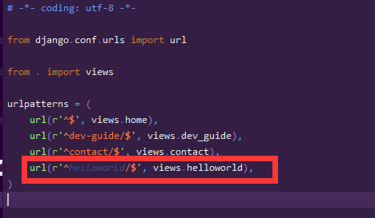
编辑home_application/views.py，如图：
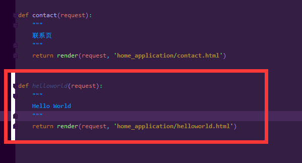
完成后在本地查看是否存在问题。
没有问题推送至远程仓库，一键部署。
如图，测试部署成功：
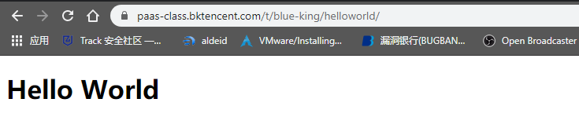